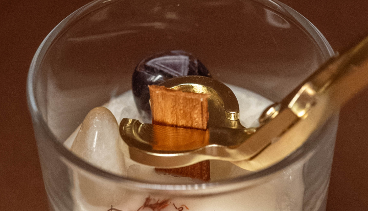
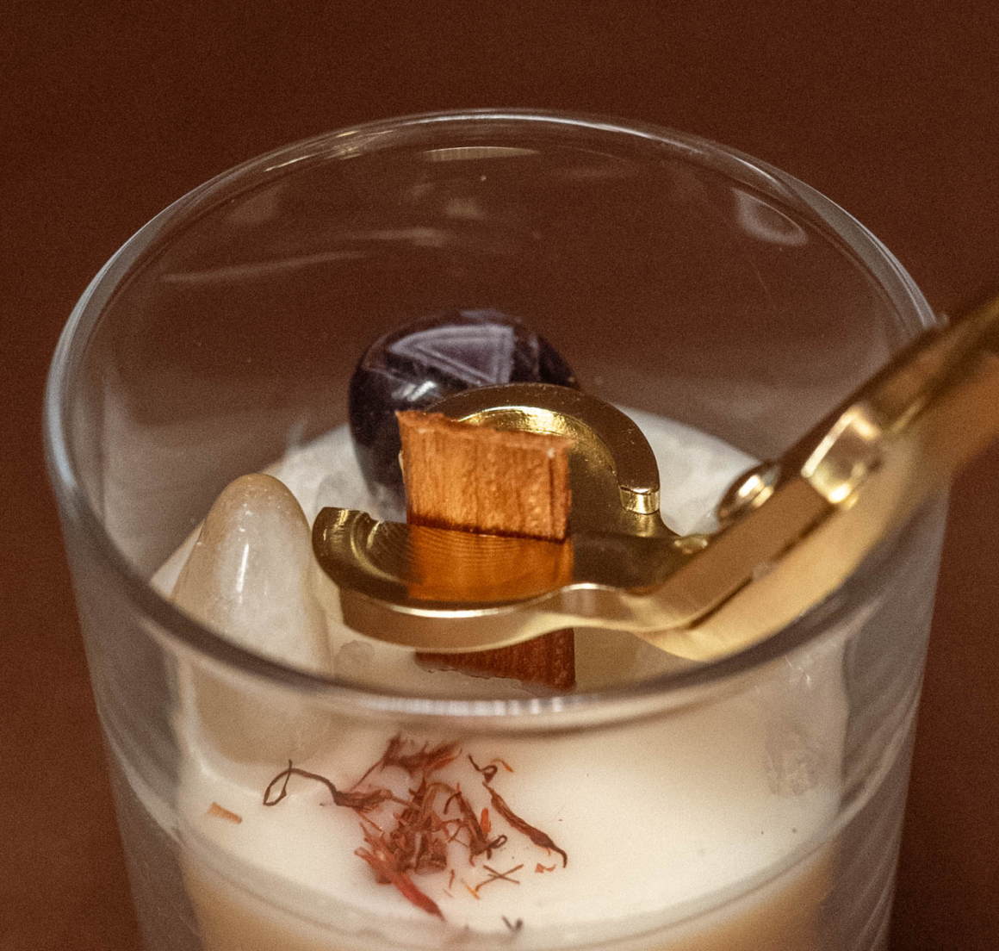

Огненные талисманы «Хранители»: сила стихий,
камней и трав в свечах
Екатерины Гриценко
Сделанные вручную, они не просто так называются Хранителями. Эти свечи – огненные талисманы, способные защищать своего владельца, его дом, семью и детей, умеющие исполнять желания, дающие силу, интуицию и любовь.
Узнайте больше о свечах-Хранителях
Как ухаживать за Хранителями
Хранители – необычные свечи. Это ваши огненные талисманы. Обязательно прочтите, как за ними ухаживать, кто и зачем должен обрезать фитиль и что делать с догоревшей свечой.

